Summer Science Exhibition 2025
Ever dreamed of being more musical?
Well alright... Hold tight!
The Summer Science Exhibition is a free six-day festival showcasing the science shaping our future and will be held at the Royal Society in London from to .
Come and join us this summer for a fun musical celebration of inclusive technologies and have a play with some of the newest instruments from the Accessible Music Instrument Collection and learn all about the science and research behind them.
 The exhibition will feature a series of interactive installations, hands-on demonstrations and talks.
The exhibition will feature a series of interactive installations, hands-on demonstrations and talks.
Located in the heart of London
The venue is fully accessible and has hearing loop T enabled and quiet spaces.
Show full facilities


| Wheelchair accessible | |
|---|---|
| Hearing loop | Frequencies change depending on which exhibition and will be displayed on signs around the event. |
| Lifts, elevators and stairs | Lifts are available for access to the basement level or first floor. |
| Signage | Well lit signage |
| Guide dogs | water, special rest room |
| Accessible toilet | There is an accessible toilet on the ground floor behind the reception area and an ambulant toilet in the basement. There are baby changing facilities in all the toilets in the basement and in the accessible toilet behind reception. Please note that the baby change facilities in the accessible toilets should only be used by parents/carers that specifically require the use of an accessible toilet, as baby changes facilities are available elsewhere. |
| Quiet space | There is a quiet room on the ground floor next to the marble hall. Please ask the reception desk if you need access to this space. |
Getting there
Underground stations: Charing Cross and Piccadilly Circus Bus routes: 12, 13, 15 and 453. Coach station: Connections from Victoria coach station See official recommendations
Science
How converting emotions into music works
Developments in science and research have resulted in exciting innovations that allow us to augment people's abilities in radical new ways using neural networking and machine learning.
Thanks to feedback loops that provide data to reinforce learning and artificial intelligence that is trained to recognise patterns, we now have the neccessary tools to make it possible to elegantly interface with machines in natural and intuitive new ways that constantly evolve, refine and improve the more they are used.
The PhotoSYNTH, and other AMIC instruments, are developed from the ground up to be accessible and inclusive, with the support, training and feedback from hundreds of disabled and differently-abled people. This ensures that every step is a step forwards, towards improvement.
By tracking your motions and emotions in real-time, the PhotoSYNTH converts your everyday movements into music and captures the subtleties and nuances of your expressions and performance.
Rather than playing a musical instrument, the Photo
An expressive musical instrument is at the zenith of complicated fidelity, some are incredibly complicated machines that require time to master. The same techniques used to simplify the complex act of making music can be used for simplifying the control of other things.

Holographic PhotoSYNTH, AMIC, London UK.
Digitising the human form
The Photo
To help a computer understand humans, we need to allow them to first see us and for that we must use a digital camera.
Step 1 :

By observing the contours of the

Using facial landmarks as references, the user's facial expressions and mood are determinded.
How to read a human being
Step 2 : Computer Vision
Computers are very good at recognising patterns. If you keep showing a computer ducks, eventually it will realise what ducks have in common - a bill, wings, webbed feat, a distinct waddle and some quacks. With practice it becomes an expert it duck detection.
The same can be true for recognising human characteristics such as moods and emotions. Being happy presents many clues and indications when studied, most obvious is smiling, but joy also brings wide eyes, and delight raises eyebrows. Frowns and furrowed brows indicate signs of melancholy and malaise.
Both happiness and sadness are easy to spot. Like ducks.

A well-trained machine can read you like a book...
But can it play you like a musical instrument?
Technology :
Imagine a world where rather than having to learn a musical instrument, the musical instrument could learn how to play you...
By using motion capture and augmented reality, the whole face is converted into a musical instrument where smiles are converted into musical notes, movements into melodies and facial expressions into audio filters and controls.
If there was a magical music spell, what musical skills would you wish for?

The Shape of Sound
Unique Sonic characteristics - The Sound of Shapes
Each sound has a distinct shape, similar to a fingerprint or snowflake. This affects how the sound travels, bounces off things, what effect it will have on matter and how that is perceived by your ears (if at all) .
Sound travels at the same speeds as gases do, because that is how they travel, they are gas powered. Instead, variation in sound comes from noise, and arranged noises. Noises that rapidly repeat like patterns are called notes. Each note (also known as a pitch) is determined by the amount of times that the noise patterns repeat in a fixed time period, often refered to as its vibration, wavelength or frequency.
Slow repeating sounds are perceived as deep or bassy, whist the faster they vibrate, the more high pitched they sound.
Play with the keyboard below to see how the shape varies between high notes and low notes..
Due to this extra detail in the higher frequencies, our brains can determine where they are coming from (their directionality) which is unlike bass that is omnipresent and all emcompassing.
Percussion
As sound moves it leaves remnants of itself on things it touches, like sonic snail trails in all directions, vibrating and shedding frequencies and reverberations. These alter the acoustics and harmonics of the sound and add tone and character.
When many notes exist in the same space they join together like jelly.
When certain frequencies join together they create new sounds, often that trigger strong emotional components.
Music is an unconscious exercise in mathematics in which the mind is unaware that it is calculating.
Gottfried Wilhelm Leibniz
There is much research into the topic but it is commonly thought that many of the emotional triggers caused by sound are rooted in our relationship with the distress crys and warning sounds of animals. The growl of a bear, the roar of a lion, the screech of the crow and the hiss of the cat are part of the ecological audio landscape that has surrounded us for millenia, speaking to us before we had a language.
The dulset tones of "mumese" are universal, a high pithed, softer sounding way to communicate with children and cute animals.
Music is an unconscious exercise in communication in which the mind is unaware that it is being guided.
Zenon Olenski
Any sufficiently advanced technology is indistinguishable from magic.
Arthur C Clarke
Shapes & Patterns
Chords & Patterns
When a musical note is played, the air pulses in patterns which is heard in our ears in the form of vibrations.
All that music is, is repetition on many levels. Repetition forms music. Through many orders of magnitude, from the microspcopic pattern repetitions that form notes, to the repetition of notes that form patterns and melodies, all the way up to the macroscopic patterns where the repetition of percussion forms rythmns and grooves.
Our ears respond to repeating waves, and our brains yearn for patterns to discover and information to decode.
Music is an unconscious exercise in metaphysics in which the mind is unaware that it is philosophizing.
Arthur SchopenhauerThe World as Will and Representation
Certain combinations of sounds when played together are refered to as a chord.
Throughout time people have searched for chords to represent emotions for their meoldies.
Below are some of the most famous chords that all have a mathematical connection. See if you can figure them out by observing the keyboard below during the next section.
Research
"Some People"
Everybody is different and unique. Some people have incredible memories and can vividly remember past events, whilst some people forget where they put their house keys every day. Some people remain laser focussed while others' brains begin to womble off.
Everybody has their own talents and their limitations.
Everybody is differently abled.
The diversity in human abilities has supported humanity by approaching problems from different perspectives and finding creative new ways of solving them.
Diversity is a human strength, and differences are powerful.
If everybody did the same things in the same fashion, everything would be a sea of uneventful nothingness, devoid of character, charm and appeal, where nothing new or exciting ever happens.
Some people have a natural talent for music whilst others struggle to play a note.
We should celebrate our differences through the universal language of music and dance!
Can technology help us to create a world where everyone can enjoy jamming together?
What a wonderful world it would be!
One area that has seen much research is using neural networks and machine learning to attempt to determine intentions from emotions and motions in realime, in order to augment existing skills with new musical powers.
By piggybacking onto intrinsic movements, that come naturally, a performance can be both expressive and communicative, where the dance leads the music, this could be as simple as binding musical actions to hand movements, or as sophisticated as a collaborative multiplayer face controlled pop-music factory that learns how to play you!
If you would like to participate in this research or attend lab or AMIC, please contact DMLab using the contact details below.
#DMLab
#Drake Music Laboratory, research and development arm
A Celebration of diversity & Inclusion.
Over 14 years, working directly with researchers, scientists, technologists, disabled artists and even people with no musical abilities, #DMLab has been researching ways to grant musical superpowers through research and technology.
The DMLab workshop originally started in London over a decade ago and is still running today but there is also now a Manchester branch. Bringing together people with technical knowledge and people with disabilities, and different abilities, to work together to research and develop new ways of interacting with technology in order to make music.
Engage
Accessible Music Instrument Collection, AMIC

Accessible Musical Instrument Collection
Access to the right musical instruments and technology can be powerful and transformative.
As part of our DMLab programme, we have supported the design and creation of a significant number of innovative accessible musical instruments.
We have also established communities and networks of Disabled musicians and technologists working together to develop bespoke solutions to accessible music-making.
We have learned a lot from DMLab and now is the right time for us to share our technology, expertise and experience…
Introducing, the Accessible Musical Instrument Collection (AMIC) :
A ground-breaking national collection, representing state-of-the-art of accessible instrument design
A world-class resource for Disabled people to explore technological possibilities for making music
A focal point for development of cutting-edge accessible instrument technology
As well as establishing a collection of existing accessible tech, the AMIC will commission and support the creation of the next generation of accessible instruments.
The Collection will be as varied as possible, from high-end commercial instruments through to DIY experimental prototypes and bespoke instruments.
We will continue to build the collection as new instruments come to light, working with makers, hackers and music tech companies to make sure it reflects the most up to date technology.
AMIC will be housed in an accessible space at Drake Music’s HQ and will be available to visit.
Disabled musicians will be able to visit the collection, test out different instruments using an accessible workstation and (hopefully) find one which suits them. Makers can come and be inspired or see what has already been built. Academics can call upon it for research and teachers can explore options for their students.
History
-

Holographic PhotoSYNTH at the Electromagnetic Fields Festival
Photograph by Alexander Baxevanis CC2.0 -

Gawain Hewitt playing with the PhotoSYNTH II -

Holographic PhotoSYNTH 4D being played at Electromagnetic Fields

Frequently Asked Questions, FAQ
Answers to common questions
What else can we expect
Apart from showcasing some exciting music technology from the AMIC, including the PhotoSYNTH and mi mu gloves, you might see some members of the London Philharmonic Orchestra, perhaps even a pop star or two! It always pays to expect the unexpected though, and there will be more surprises announced closer to the event.
What are Mi Mu gloves?
Mi Mu gloves are special handworn controllers that allow you to interface with music technology using your hands and arms. See their official website
Where can I learn more about the research?
There are a number of research papers written about this topic including :
- Musical Avatars
- Augmenting human abilities by observing intrinsic movements
- Gov UK - Human Augmentation – The Dawn of a New Paradigm
- Bouba-kiki. Nielsen, Alan; Rendall, Drew (2011). "The sound of round: evaluating the sound-symbolic role of consonants in the classic Takete-Maluma phenomenon". Canadian Journal of Experimental Psychology. 65 (2): 115–124. doi:10.1037/a0022268. PMID 21668094.
Cool website! How did you make it?
This website was designed and created by designerzen of Awesomething social enterprise. Hand coded using HMTL, CSS and Javascript, using Web-Audio and the Web-MIDI APIs. The source code is available on github